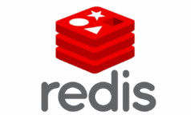
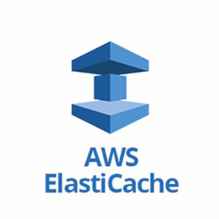

Gastón Ramos
Blog personal
Cómo migrar datos desde Sidekiq (Redis) a AWS Elasticache
Escrito en dos tardes del 20 y 21 de Agosto de 2024En estos últimos días estuve trabajando en migrar nuestra aplicación principal a Amazon ECS y una de las tareas que tuve que llevar a cabo, entre otras, es migrar los datos de Sidekiq, que es un sistema de procesamiento en background que puede manejar muchos jobs al mismo tiempo y en el mismo proceso, desde el Redis que estaba en aptible al nuevo Redis en Amazon. Elasticache. Sidekiq tiene varias colas y keys que usa para guardar datos relativos a los jobs, pero el que a nosotros nos interesa es la key 'schedule' por que tenemos muchos jobs que se ejecutan a futuro, y que luego envían mensajes a nuestros usuarios, como no queremos perder esto, tenemos que pasarlo a nuestra nueva instancia de Redis en ElastiCache. Lo que hay que hacer es relativamente sencillo, ( una vez que ya sabemos lo que hay que hacer siempre es sencillo :) ), y es lo siguiente:
1- Hacer un Dump del Redis en Aptible, en particular de la key 'schedule'. 2- Hacer un restore en el Redis de Amazon ElastiCache.
Bueno hay una pequeña complicación, y es que ElastiCache acepta
conexiones únicamente desde instancias de AWS EC2, y para esto
lo que vamos a hacer es un tunel ssh que nos permita conectarnos
a ElastiCache desde la computadora que estamos haciendo la migración.
Así que bueno, vamos al grano, paso 1 hacer el dump. Para
esto vamos a usar el comando redis-cli que en GNU/Linux Debian lo podemos
obtener instalando redis-tools apt-get install redis-tools.
Vamos a necesitar setear algunas variables de entorno con la url
de los redis, REDIS_VIEJO va a contener la URL desde dónde vamos a
hacer el dump y REDIS_NUEVO_AWS la url del redis en ElastiCache
dónde vamos a hacer el restore:
REDIS_VIEJO=redis-aptible.aptible.com
REDIS_NUEVO_AWS=redis-elasticache.amazon.com
REDIS_VIEJO_PORT=6379
redis-cli -h $REDIS_VIEJO --pass $REDIS_VIEJO_PASS -p $REDIS_VIEJO_PORT dump 'my_namespace:schedule' > redis-dump.rdb
esto nos deja un archivo con el dump llamado redis-dump.rdb, RDB es uno de los formatos que Redis usa para persistencia, si querés leer un poco más de esto, acá te dejo un link:
https://redis.io/docs/management/persistence/
Después de esto vamos a crear el tunel ssh requerido:
ssh -i ~/.ssh/mi-key.pem -f -N -L 6380:$REDIS_NUEVO_AWS:6379 ec2-user@$EC2_INSTANCE_IP
cat ./redis-dump.rdb | head -c-1 | redis-cli -h localhost -x restore 'cool_namespace:schedule' 0
(error) BUSYKEY Target key name already exists.
bueno, parece que la key 'cool_namespace:schedule' ya tiene valores y por ese motivo no nos deja hacer el restore, podemos ver lo que tiene, usando el comando 'ZRANGE', dado que 'cool_namespace:schedule' es de typo ZSET, y esto lo podemos verificar así:
redis-cli -h localhost TYPE 'cool_namespace:schedule'
# zset
redis-cli -h localhost ZRANGE 'cool_namespace:schedule' 0 -1
# "{\"class\":\"RefreshTokenWorker\",\"args\":[1053],\"retry\":t..."
En nuestro caso, no nos interesa conservar los valores que tiene 'cool_namespace:schedule' por que este es un servidor nuevo, y los datos que tiene son de pruebas así que los vamos a borrar.
Ojo! mucho cuidado por que el siguiente comando es destructivo, verificar bien dónde lo estamos ejecutando.
redis-cli -h elb-enara-60149.aptible.in -p 6379 DEL 'cool_namespace:schedule'
# (integer) 1
Ahora podemos verificar que está vacío:
redis-cli -h localhost ZRANGE 'cool_namespace:schedule' 0 -1
# (empty array)
Una vez hecho esto ahora sí podemos hacer el restore del dump que hicimos al principio:
cat ./redis-elb-rdb | head -c-1 | redis-cli -h localhost -x restore 'cool_namespace:schedule' 0
OK
Ahora podemos verificar que el restore funcionó:
redis-cli -h localhost ZRANGE 'cool_namespace:schedule' 0 -1
# 1) "{\"class\":\"RefreshTokenWorker\",\"args\":[1053],\"retry\":true,\"queue\":\"default\",\"jid\":\"4e38f3ce0fe240ac3c\",\"created_at\":1668404647.6717927,\"newrelic\":{\"traceparent\":\"00-c9617fc252a55f60f571735fd01ebe8f-c6a55ba2a01a69dd-01\",\"tracestate\":\"3333781@nr=0-0-333378...."
Y debemos ver la lista completa del contenido del set, que yo acá no la voy a poner completa por que es larga. Algo importante a tener en cuenta es esto: (sacado de la doc de redis)
RESTORE checks the RDB version and data checksum. If they don't match an error is returned.
Es decir que la versiones de RDB deben coincidir o ser compatibles.
Bueno después de esto el trabajo de migración ya está hecho!, entonces repasemos los comandos de Redis que usamos:
TYPE: para ver el tipo de dato que contiene una key.
ZRANGE: para retornar un rango de valores de un conjunto guardado en una key.
DEL: Para eliminar el valor de una key.
DUMP: Para serializar el valor contenido en una key (nosotros además lo guardamos en un archivo).
RESTORE: Crea una key y la asocia a un valor que lo obtiene al deserializar el valor serializado provisto.

Eso fué todo amigxs. gracias por leerme :) Gramos.